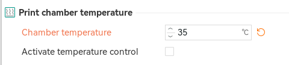
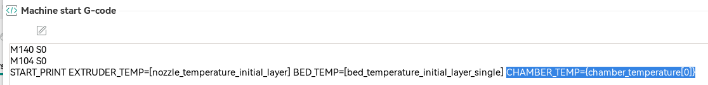
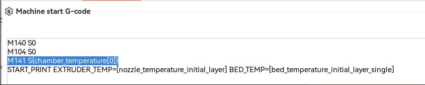
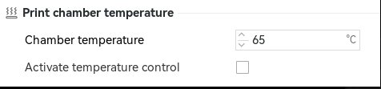
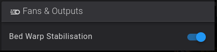
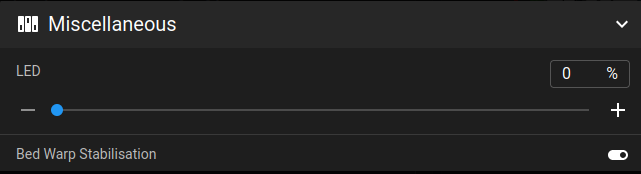
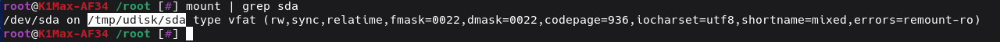
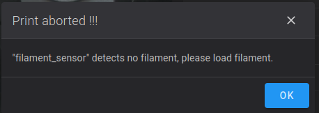
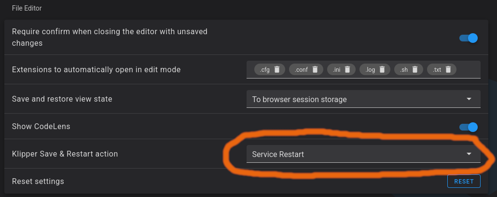

Frequently Asked Questions¶
Can I use Simple AF with my default probe / Load Cells?¶
There are no plans to support load cells in simple af. The author (garethky) of the load cells code getting merged into Klipper has stated very clearly that the hardware on the K1 (specifically the bed mcu) is not sufficient to properly support the load cells (Creality cut corners with the load cells chip). In addition because there is no scipy in the klippy python virtual environment the experience even if we somehow got it working would be suboptimal.
As a result of this I have abandoned any plans to support load cells as part of Simple AF for K1 series. There is a fork of Simple AF which supports load cells. We have no affiliation with this project and thus cannot offer any support for using it. In addition the fork is now 800+ commits diverged from this project and thus more recent features, fixes, etc would not be available.
If you are interested check out https://github.com/Sekilsgs2/creality_pellcorp
Note
This does not mean you should remove your load cells, in fact if you get into trouble with Simple AF (for instance a probe mount gets damaged), you might want to switch to stock and you will need the load cells hardware to do that!
How do I integrate a Nozzle Wipe?¶
Information has been moved to Nozzle Wipe Custom Hook
How do I switch from btteddy to eddyng?¶
How do I switch from btteddy to cartographer?¶
How do I add my own macros to Simple AF?¶
So you cannot modify or add new macros to Simple AF cfg files, they will be erased the next time you update, what you should do instead is add your own .cfg files with your macros.
So create a new file in the config directory, if you create the file in the config directory, Simple AF will back it up for you to the pellcorp-overrides directory where it can be automatically added to your github and will survive a factory reset.
So first step is create a new file in the config directory via fluidd or mainsail, I am going to call my file example.cfg
Then just add [include example.cfg] to printer.cfg, just put it at the end of all the existing includes, save and restart and your macro should appear in the list of macro buttons.
Note
Its worth noting cfg in sub-directories will not be automatically backed up so best to keep them all in the main config directory.
Why can't I use force move?¶
We disable FORCE_MOVE by default because it works on the stepper level so for multi-z users it would create havoc, and also force move does not work so well for moving x and y either, so its really not that useful. SET_KINEMATIC_POSITION is a much better choice as once you activate this you can use the normal movement buttons in fluidd and mainsail.
So if you need to move your nozzle up from being on the bed you should run:
This tells the printer to pretend that the nozzle is at zero, so this allows you to move the bed down the the max height of z
If you want move to your bed up to the nozzle you should instead do something like:
The reason why you cannot choose Z=0 for this scenario is you are telling the printer its at 0 z and the min position for z is -5, so this would only allow you to move the bed down 5mm, so you need to fake the printer into setting the bed to sufficient height to allow you to move it down sufficiently.
If you were to set SET_KINEMATIC_POSITION Z=100, but your bed is already at the bottom of the printer there is no way to bring the bed up to meet the nozzle because it will exceed minimum position after moving 105mm.
If you wish to restore access to force move set the variable_disable_force_move: True to False in sensorless.cfg and save and restart.
Note
You can use the hidden _SET_KIN_MAX_Z macro to set kinematic distance to allow the full range of z height, this macro is normally used for calibration to allow
users to move their Cartographer, Beacon or Eddy close to the bed before calibration, but its useful for many situations.
How do I replace Line_Purge with a custom line purge?¶
Create a new macros file, call it something like CustomMacros.cfg (it matters not what its called, just as long as it is not the name of an existing file), and create your own _SAF_LINE_PURGE macro.
Third step is to add a new include to printer.cfg for your new custom config file, and your _SAF_LINE_PURGE macro will be called now instead of the KAMP one.
The reason this is recommended over just commenting out LINE_PURGE in start_end.cfg and adding your own macro call, is everything I have described above will survive an Update and even a factory reset because config overrides supports removing the Line_Purge.cfg include, adding a new include to printer.cfg and backing up your custom files.
For more information Custom Hooks
How do I integrate Knomi?¶
How can I change MCU fan from always on?¶
By default Simple AF configures the main MCU fan to always be on to avoid overheating the MCU, you can instead restore it to only come on when the steppers or heaters are activated by a few tweaks to fan_control.cfg.
So disable this:
Enable this:
[controller_fan mcu]
pin: PB2
tachometer_pin: ^PC6
heater: extruder, heater_bed
stepper: stepper_x, stepper_y, stepper_z
idle_timeout: 90
You also have the option of making the MCU fan purely temp based, however there is a risk if the temp sensor on the MCU is a bit dodgy the fan might not startup early enough to avoid damage or weird behaviour from the MCU and other components, I strongly recommend leaving the MCU fan to always be on
But if you want to, something like this might work:
So disable this:
And add this config:
# thanks to Habitural from discord
[temperature_fan _mcu_fan]
pin: PB2
kick_start_time: 0.8
off_below: 0.1
#max_power 1.0
sensor_type: temperature_mcu
control: pid
min_temp: 0
max_temp: 80
pid_kp: 1.0
pid_ki: 0.5
pid_kd: 2.0
min_speed: 0.1
max_speed: 0.8
target_temp: 38
You may need to add ADC_TEMPERATURE to the [duplicate_pin_override] section if using this last option.
Note config overrides should retain these config changes as long as you do them in the fan_control.cfg file (special handling for that file allows adding and removing whole sections)
How do I get the printer to lower the bed at the end of a print?¶
This is just a configuration change to the start_end.cfg _CLIENT_VARIABLE variable_custom_park_dz value, you change the value from 25.0 to 50.0 or whatever you want. If you print a really tall print the bed will be lowered as much room as there is left without exceeding the stepper_z max_position.
How do I switch default UI from fluidd to mainsail and back?¶
To switch to mainsail:
To switch back to fluidd:
This change will survive updating Simple AF, but will not be retained for a reinstall or a factory reset.
Note
If you run the above and receive an error like:
```
root@K1Max-AF34 /root [#] ~/pellcorp/tools/switch-default-ui.sh mainsail
-sh: /root/pellcorp/tools/switch-default-ui.sh: not found
```
It means you are on an older version of Simple AF and you should instead use the old style commands:
```
/usr/data/pellcorp/k1/installer.sh --branch main
~/pellcorp/tools/switch-default-ui.sh mainsail
```
How do I change the hostname?¶
You can update the /etc/hostname with the new hostname from ssh like this:
Next time you power cycle your printer, the hostname should be updated
How to install Happy Hare on Simple AF?¶
Note
This does not apply to Simple AF for RPi
The default installer needs to be executed with some different arguments
So first of all clone the repo:
Then run the installer:
cd /usr/data/Happy-Hare
./install.sh -k /usr/data/klipper -c /usr/data/printer_data/config -z -m /usr/data/moonraker
systemctl restart moonraker
systemctl restart klipper
How do I enable moonraker timelapses?¶
Where can I find stock configuration files?¶
So Guilouz who created Helper Script hosts the latest version of the K1 / K1M / K1C firmware on his website, you can find the stock config files in his repo: https://github.com/Guilouz/Creality-K1-Extracted-Firmwares/tree/main/Firmware/usr/share/klipper/config
I am also starting to collect some squashfs (decrypted) for various firmware as well at https://github.com/pellcorp/downloads/tree/main/creality/firmware
How do I setup remote access and AI failure detection?¶
How to read belt shaper graphs?¶
Take a look at this video recommended by @EAZY https://www.youtube.com/watch?v=zfnWsBOt3_8
How can I make sure my bed is level / trammed?¶
ZeroDotCmd created a great video on the subject of teeth skipping with a few options for how to do it https://youtu.be/S2d_9Ysz-Q8
Note this is not about bed mesh, this video is just about getting your bed level enough for bed mesh to be effective.
How to enable Github backups for my configuration?¶
How can I wait for chamber temp?¶
Orca Slicer has the ability to define a chamber target temp per filament and if you want Simple AF to wait on that chamber temp before actually trying to print we can with a bit of work in both Orca Slicer and Simple AF via Custom hooks.
Step 1 - Define per filament any requirement for a chamber temp, look Print chamber temperature for:

Set a value in celcius, but do NOT check the Activate temperature control checkbox.
Step 2 - Add CHAMBER_TEMP={chamber_temperature[0]} to Machine Gcode Start Print:

Step 3 - Define a _SAF_START_PRINT_BEFORE_LINE_PURGE custom hook, something like this would work:
[gcode_macro _SAF_START_PRINT_BEFORE_LINE_PURGE]
gcode:
{% set CHAMBER_TEMP=params.CHAMBER_TEMP|default(0)|float %}
{% if CHAMBER_TEMP > 0 %}
RESPOND TYPE=command MSG="Waiting chamber to reach {CHAMBER_TEMP}c ..."
TEMPERATURE_WAIT SENSOR="temperature_sensor chamber_temp" MINIMUM={CHAMBER_TEMP}
RESPOND TYPE=command MSG="Chamber target temperature reached: {CHAMBER_TEMP}°C"
{% endif %}
How can I set a chamber fan target temp from my slicer?¶
There is no way to pass in a parameter to start print for this, but there is a really easy workaround and you can even set the target per filament. The target being the temp at which the fan gets activated.
So per filament in Orca Slicer find the Print chamber temperature and set a value in celcius, but do NOT check the Activate temperature control checkbox.
Then in your Machine start Gcode above START_PRINT add this line (before the START_PRINT line):
The M141 macro provided by Simple AF (derived from Helper Script) sets the target of the chamber fan via this macro.
 
How do I cleanup all those backup printer config files?¶
Note
This does not apply to Simple AF for RPi
Simple AF runs a cleanup every time the printer starts it does the following:
- Deletes all log files older than 7 days (excluding moonraker.log, klippy.log and guppyscreen.log), if all log files are older than 7 days, it will leave the the newest old file intact
- Deletes all backup tar.gz files older than 7 days, if all backup .tar.gz files are older than 7 days, it will leave the newest intact
- If there is less than 1GB of space left on /usr/data it will remove all gcode files older than 7 days
You can also run this script manually via the hidden macro _CLEANUP_FILES
What is bed warp stabilisation and why is it good?¶
An excellent video from need it make if for why heat soaking is absolutely vital for optimal bed mesh https://youtu.be/8PEsPLDxt-c
In Simple AF out of the box when you start a print a period of bed warp stabilisation is performed. The default macro will wait 8 seconds for every degree of target bed temp.
This is also often referred to as heat soak and it allows the heated bed to settle into its final state before performing the bed mesh.
You can disable it before a print by toggling the bed warp stabilisation toggle, which you can find in the fans and outputs section of your UI.
In Fluidd its here:

In Mainsail its here:

You can disable it permanently by changing the start_end.cfg [output_pin Bed_Warp_Stabilisation] value to 0.
You can also modify the following configuration in _START_END_PARAMS:
variable_bed_warp_wait_multiplier- So this value is how many seconds per degree of final bed target temp.variable_bed_warp_fraction_wait- If the bed temp is at least 75% of target we will do partial heat soak, if it's less than 75% will heat soak then entire target amount.variable_bed_warp_wait_interval- This is how long the macro will sleep between notifications
Warning
Please note at the end of a print the heater of the bed will remain heated until the printer times out in a hour.
If you want to use bed warp stabilisation but not keep the heater on at end, you can change the start_end.cfg _START_END_PARAMS variable_end_print_keep_bed_heated to False!
For some probes like the eddy (so for btteddy or eddyng) sitting just above the heated bed for an extended period of time can cause it
to be excessively heated, there is a start_end.cfg property variable_start_print_bed_heating_move_bed_distance which can be set to something like 100
to position the toolhead much further away from the bed while the bed heats, the default value of 20mm might not be sufficient for your use case.
How do I use my cartographer for input shaping?¶
How can I downgrade from CFS Firmware?¶
Creality added logic to prevent downgrading to older version of firmware, but its super easy to work around this, we just need to
download an older local_ota_update.sh file, I have saved the 1.3.3.46 version of the script to my downloads repo to make it
easier to get.
So first of all go and grab the version of the older K1 firmware you want from https://www.creality.com/pages/download-k1-flagship, save it to a USB key, and stick it into the front of your printer!
Now login via ssh to your printer
From the ssh command line on your printer download the older local_ota_update.sh script like so:
wget https://raw.githubusercontent.com/Guilouz/Creality-K1-Extracted-Firmwares/refs/heads/main/Firmware/etc/ota_bin/local_ota_update.sh -O - > /usr/data/local_ota_update.sh
chmod 777 /usr/data/local_ota_update.sh
Now you can flash new firmware with this script without the version downgrade logic getting in the way:
You should wait until you see lines like the following especially ota update ok:
rootfs.squashfs read ok, now quit
ota: data processed: 99% 127696896 132233080
rootfs update done
start update rtos
zero.bin read ok, now quit
ota: data processed: 100% 452408 132233080
rtos update done
ota update ok
256+0 records in
256+0 records out
ota: stoped success
Then you can logout of your ssh session and power cycle your printer. It is a good idea to factory reset your printer just to be sure all remnants of the CFS abomination has been excised!
Note
If you get the error -sh: /usr/data/local_ota_update.sh: Permission denied, you forgot to do
chmod 777 /usr/data/local_ota_update.sh
If you get the error /tmp/udisk/sda1/CR4CU220812S11_ota_img_V1.3.3.46.img Not a file it means
either you did not download the latest img or else for some reason the usb key was mounted to somewhere
different than /tmp/udisk/sda1/
You can check which directory the usb was mounted with the following command:
For example for my USB key its not mounted to /tmp/udisk/sda1, instead its mounted to /tmp/udisk/sda:

So I would need to specify instead:
How can I prevent a print starting or resuming if there is no filament present?¶
A new feature has just been merged to Simple AF to support this, but you will need a normal filament sensor switch, update to latest Simple AF and enable a setting after installation.
You need to update to latest Simple AF:
Note
If you run the above and receive an error like:
```
root@K1Max-AF34 /root [#] ~/pellcorp/installer.sh --branch main
-sh: /root/pellcorp/installer.sh: not found
```
It means you are on an older version of Simple AF and you should instead use the old style commands:
```
/usr/data/pellcorp/k1/installer.sh --branch main
~/pellcorp/installer.sh --update
```
Then open the start_end.cfg, find the variable_runout_sensor in the _CLIENT_VARIABLE section and set it to match
your filament runout sensor, like so:
Tip
The runout sensor you specify in the variable_runout_sensor configuration must match exactly your configuration,
so for instance if you switch to a toolhead sensor you might have configured it as [filament_switch_sensor toolhead_sensor]
in which case you must change the configuration to variable_runout_sensor: "filament_switch_sensor toolhead_sensor"
Save and Restart
Then when you try to start a print without filament you will get a message like:

How can I switch to a toolhead filament runout sensor?¶
So if you are using the DXC extruder, Creality CFS Extruder, or even the Henlor Mod for the stock Extruder, you want to switch from using the runout sensor bolted to the printer case and use the extruder runout sensor on the toolhead, its really easy, its literally just a single config change in your printer.cfg.
So find the [filament_switch_sensor filament_sensor] and change:
From: switch_pin: !PC15
To: switch_pin: !nozzle_mcu:PA10
It should look something like this (there may be event_delay and pause_delay which should be left alone):
[filament_switch_sensor filament_sensor]
pause_on_runout: false
switch_pin: !nozzle_mcu:PA10
runout_gcode: _ON_FILAMENT_RUNOUT
Save and Restart and enjoy!
Danger
Do not define two filament_switch_sensor that both _ON_FILAMENT_RUNOUT for runout_gcode, the installer will
remove the [filament_switch_sensor filament_sensor_2], do not restore this config!
Please also note that on more recent versions of Simple AF the pause_on_runout value is set to false, because
we trigger PAUSE from the _ON_FILAMENT_RUNOUT macro now to avoid phantom triggers of pause when changing filament!
What is Axis Twist?¶
So ZeroDotCmd has done some great videos on this topic https://www.youtube.com/watch?v=O_U8t5Ap0Ik and https://www.youtube.com/watch?v=1KVTRDim1lk
More details here: https://www.klipper3d.org/Axis_Twist_Compensation.html
How do I get the bed to cooldown after a print finishes?¶
So by default with Bed Warp stabilisation enabled, the bed will stay warm after a print for up to 1 hour (this can be changed too btw), if you do not want
the bed to stay warm after a print you can either toggle the bed warp stabililation toggle in fluidd or mainsail before END_PRINT runs or you can modify the
start_end.cfg variable_end_print_cool_down and change it to False, so it should then look like:
Can I have more than one camera on Simple AF¶
For Simple AF for RPi yes thats fine and you can do that via crowsnest, but for K1 Series (which includes K1, K1M, K1SE, K1C, Ender 5 Max and Ender 3 V3 KE), that is not possible, for more information see Additional Camera
Get Fluidd to restart Klipper for Save and Restart¶
Fluidd actually has a feature to switch from asking Klipper to restart itself to getting Moonraker to restart the Klipper service itself, this can be a useful change to make because in my experience restarting klipper results in less disconnections of eddy probes like Cartographer, Beacon or Eddy and takes about the same amount of time.

How can I configure the timezone¶
The /etc/init.d/S58factoryreset has recently been updated not to delete the /etc/localtime, so you can configure it once and it should survive any number of factory resets, following the excellent guide here:
https://guilouz.github.io/Creality-Helper-Script-Wiki/firmwares/change-date-and-time/